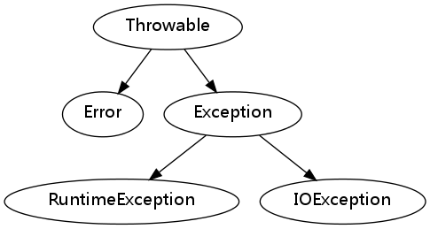

Clojure笔记
Table of Contents
Clojure Forms
Boolean
- typical value: true, false
- useful function:
- not
- and
- or
Nil
- typical value: nil 只有false与nil会被计算为false,其它的都为true
Character
- typical value: \a \b \c …
Number
- typical value: 1 2
- useful function:
- +, -, *
- /(分数形式),quot(商),rem(余数)
- inc,dec
- min, max
=,<,<,>,>=- zero?,pos?,neg?,number?
Symbol
- typical value: user/foo
String
- typical value: "hello"
- useful function:
- str: 拼接多个字符串
- subs: 子字符串(0为开始下标)
- string?
- print & println: 后者自动添加一个新行
regex regex
- re-pattern:创建一个正则表达式,
(re-pattern "[abcd]")等价于 #"[abcd]",
KeyWord
- typical value: :tag :doc
List
- typical value: (+ 1 3) (println "foo")
Vector
- typical value: [1 2 3]
Map
- typical value: {:key1 val1, :key2 val2 …} {"Lisp" "McCarthy" "Clojure" "Hickey"}
Set
- typical value: #{:val1 :val2 …}
seq operation
clojure的sequence都是不可变的.
- first: like car in scheme
- rest: like cdr in scheme
- cons: like cons in scheme (Construct)
- conj: 将单个元素插入seq,对于list是插入到最前面,对于vector是插入最后面
- into: 将后一个seq插入到前一个seq,对list是插入最前面,对vector是插入最后面
seq library
下面的函数对任何类型的sequence都有效, 而且这些操作除极少数外基本都返回 lazy sequence.
- empty? : same as null? in scheme.
- seq : 如果coll为空则返回 nil, 否则返回一个seq.
- range: (range start? end step?)
(range 5) ;;=> (0 1 2 3 4)
- repeat:
(repeat 5 "a") => ("a" "a" "a" "a" "a" ) (repeat "a") => return an infinite seq (take 5 (repeat "a")) => ("a" "a" "a" "a" "a" ) - (iterate f x): f可以看做是一个后继函数,返回一个无限序列
(take 5 (iterate inc 1)) => (1 2 3 4 5)
- take: 从一个无限序列中抽取指定个数的元素组成序列
- cycle:返回一个无限的序列
(take 10 (cycle (range 3))) => (0 1 2 0 1 2 0 1 2 0)
- interleave:
(interleave '(1 2 3) '(a b c) '(x y z)) => (1 a x 2 b y 3 c z)
- interpose:
(interpose \, ["aa" "bb" "cc"]) => ["aa" \, "bb" \, "cc" \,]
- (join sep seq) : 返回将seq中的元素用sep分割后的字符串
- list:生成一个list
- vector: 生成一个vector
- hash-set:
- hash-map:
- filter:
- map:
- reduce:
- split-at:将一个seq根据index分割为2个seq
- split-with: 将一个seq根据一个predictive function的返回值分割为2个seq,true 为一个seq,false为一个seq
- every?
- some
- not-every?
- not-any?
基本语法
function definition
- 匿名函数(fn)
(fn [x y] (+ x y))创建一个匿名函数,fn和lambda类似,fn还有一个简 写形式#(+ %1 %2).如果只有一个参数,那么可以用 % 代替 %1 - def: 可以将一个匿名函数与一个name关联起来,和
scheme中的define类似(def my-add (fn [x y] (+ x y)))
- defn: 是def 与 fn 的简写
(defn my-add [x y] (+ x y))
- 参数的解构
(defn my-add [x y [a b]] (+ x y a b)) (my-add 1 2 [3 4]) ; => 10
- Arities(可以看做是函数多态)
根据参数的不同而执行不同的动作
(defn square-or-multiply "squares a single argument, multiplies two arguments" ([] 0) ([x] (* x x)) ([x y] (* x y)))
这应该也是为什么clojure中doc string是放在函数名之后而不是参数名之后的原因
- 递归: 由于jvm的关系,clojure不会自动进行尾递归优化,在尾递归的地方,你应该明
确的使用
recur这个关键词,而不是函数名(defn my-add [x y] (if (zero? x) y (my-add (dec x) (inc y)))) (defn my-add [x y] (if (zero? x) y (recur (dec x) (inc y))))
第一个不会进行尾递归优化,第二个会进行尾递归优化
- loop:和
recur配合可以实现和循环类似的效果(loop [i 10 j 10] (if (zero? i) j (recur (dec i) (inc j))))
和scheme中使用 let 创建一个函数很相似
(let loop ([i 10] [j 10]) (if (zero? i) j (loop (- i 1) (+ j 1))))
- curry
只提供部分参数给函数,比如我们可以这样定义
add3(def add3 (partial + 3)) (add3 4) ;=> 7
partial 接受有一个函数以及部分参数,返回一个函数
- comp: 可以生成一个函数,f(g(x))等价于
((comp f g) x)
基本控制结构
if
cond
let
letfn
模块与namespace
- require: 导入clojure模块
- use: 导入clojure模块,与require的区别是,use会将指定模块的名字导入当前的 namespace,所以在引用时就不需要添加模块名作为前缀,而require则需要,一般情况 下推荐use
- import: 导入java的类
(import 'java.util.Date) ; (new Date) (import '(java.util.regex Pattern Matcher)) ; only import Pattern and Matcher in java.util.regex
- ns:创建一个命名空间,ns是一个宏,所以后面的参数不需要quote,而且注意后面的
require,use,import是以keyword的形式给出
(ns com.example.library (:require [clojure.contrib.sql :as sql]) (:use (com.example one two)) (:import (java.util Date Calendar) (java.io File FileInputStream)))
State
ref
- ref
- deref(@)
- ref-set: 需要使用 dosync来避免竞争条件
- dosync: 被dosync包裹的表达式要么全部执行成功,要么都不执行,并且保证每一步
都不出现竞争条件,和数据库的存储过程很类似,实现了ACI,数据库的存储过程一般
实现了ACID.
(def current-track (ref "Venus, the Bringer of Peace")) ;; -> #'user/current-track (def current-composer (ref "Holst")) ;; -> #'user/current-composer (dosync (ref-set current-track "Credo") (ref-set current-composer "Byrd"))
- alter :
(alter ref update-fn & args...),@ref作为update-fn的第一个参 数(这也是为什么下面的代码要用conj代替cons的原因),args作为剩余的参数,alter 可以看作是dosync,ref-set,deref的简写(def message (ref ())) (defn navie-add-message [msg] (dosync (ref-set message (cons msg (deref message))))) ;;; identical (defn add-message [msg] (alter message conj msg))
atom
atom和ref很类似,但是atom当你仅仅只是需要原子的更新单个值时,使用更简便.
- atom:
(def (atom ())) - deref(@)
- reset!: 更新原子的值
- swap! :
(swap! r update-fn & args)用一个函数调用来生成新的值
Macro
几个简写
- 反引号(`) : 和scheme相同
- ~, ~@ 和scheme的 , ,@ 的含义相同,之所以用 ~ 是因为clojure中 , 与空格等价
- id# :在一个标识符背后加上 # 意味着生成一个唯一的symbol, 比如 foo# 实际可
能就是 foo_004 可以看作是let与gensym的等价物,这在避免符号捕捉时很有用.
(defmacro and ([] true) ([x] x) ([x & rest] `(let [and# ~x] (if and# (and ~@rest) and#))))
注意上面的 and# 不需要使用 ~ 来求值,因为 and# 本身就是一个独一无二的符号
调用java
- new : 创建一个对象.
(new String) - . :
(. target name & args) - set! :
(set! (. target name) value)
上面的3个操作符已经足够,但是为了方便,还有以下几个操作符
- ClassName/field: 只对静态变量或者方法有效
Integer/MIN_VALUE ; => -2147483648 (Integer/parseInt "101") ; => 101
- .method :
(.method object args)可以看做等价于(. object method args), 但是要记住 .method并不是真正的第一类函数对象,所以你不能直接将它传递给 map,filter这类函数(map #(.toUpperCase %) ["one" "two" "three"]) ; => ("ONE" "TWO" "THREE")
java标准库
java.lang(默认导入)
java.lang.String(字符串)
字符串是不可变的.所以修改会返回一个新的字符串
- + 可以拼接字符串
- equals: 检测两个字符串是否相等, 不能用==.
- String toLowerCase()
- String toUpperCase()
- String trim()
- int length()
- boolean startsWith(String prefix)
- String substring(int start [, int end]) 不包含end指向的字符
- String replace
- format: 静态方法
String s1 = "aaaa"; String s2 = s1 + "bbbb"; // s2 = "aaaabbbb" int len = s2.length(); // len = 8 String newStr = s2.substring(0, 3); // newStr = "aaa"
java.lang.StringBuilder
该类表示的字符串可变,主要是为了效率考虑
StringBuider builder = new StringBuider(); builder.append("hello"); builder.append(' '); String completeString = builder.toString();
java.lang.Math
各种数学函数以及变量, 都是静态函数以及变量
- Math.PI: 圆周率
- Math.E: 自然对数
- Math.sin, Math.cos, Math.floor etc
java.lang.System
java.util
java.util.Date(Time)
java.util.GregorianCalendar(日历)
java.util.ArrayList
java notes
tools
run program
- in Terminal
javac Welcome.java java welcome
OOP
package
建议使用域名的逆序来命名包, 比如有一个域名: example.com, 那么你就可以使用
package com.example.testcode
来申明一个文件属于 com.example.testcode包, 同时该文件要放入 com/example/testcode/目录中.使用IDE可以很轻松的做到这一点.
继承
java的所有继承都是公有继承,使用 extends 关键字.
class Employee{ public Employee(String name, double salary){ this.name = name; this.salary = salary; } public String getName(){ return this.name; } public double getSalary(){ return this.salary; } public void raiseSalary(double byPercent){ double raise = this.salary * byPercent /100; this.salary += raise; } private String name; private double salary; } class Manager extends Employee{ public Manager(String name, double salary){ super(name, salary); // super调用父类的构造方法 this.bonus = 0; } public double getSalary(){ double baseSalary = super.getSalary(); // super调用父类的普通方法 return baseSalary + this.bonus; } public void setBonus(double bonus){ this.bonus = bonus; } private double bonus; }
在类的方法中可以直接访问该类的所有实例的私有属性,所以在Employee的equals方法
中可以直接使用 other.name,但是在子类的方法中不能直接访问父类的私有成员,所
以上例中 Manager 类中的 etSalary 方法不能直接 this.salary 而必须用父类
的公有方法即 super.getSalary(), Manager 中的构造函数也是同样的道理.super
有两个作用:一个是调用父类的方法,一个是调用父类的构造方法
类型转换
- 子类变量可以直接赋给父类变量,这样父类变量调用方法时会使用动态绑定,比如
如下代码:
Employee e = new Manager(...); e.getSalary();
上面的getSalary调用的是 Manager的方法,而不是Employee的方法.
- 父类变量要赋给子类变量,则必须使用强制转化, 比如类 Manager 是 Employee
的子类, 那么:
Employee e = new Manager(...); if(e instanceof Manager){ Manager m = (Manager) e; }
一般情况下使用 instanceof 来检查下会更保险.
Object
Object是所有类的超类,该类有有一些方法建议每一个类都重载:
- equals方法: 用来检测一个对象是否等于另一个对象,下面是一个推荐的实现方
式:
class Employee{ .... public bool equals(Object otherObject){ if(this == otherObject) return true; if(otherObject == null) return false; if(getClass() != otherObject.getClass()) return false; Employee other = (Employee) otherObject; return name.equals(other.name) && salary == other.salary; } } class Manager extends Employee{ ... public bool equals(Object otherObject){ if (! super.equals(otherObject)) return false; Manager other = (Manager) otherObject; return this.bonus == other.bonus; } }
基本上所有的
equals都可以用这种模式来定义, 但是对于子类, 比如manager 类就只需要调用父类的equals方法,然后在加入一些特定于Manager类的检测就好 - toString方法: 用来返回类实例的字符串表示.该方法调试时非常方便
- hashCode方法: 获取一个类实例的散列值
抽象类
抽象类不能实例化,它主要是用来被其它类继承的,实际上起的是一个占位的角色,大多 数时候,抽象类只会包含一系列的抽象方法,但是抽象类是可以包含实例域与普通的类 方法的,下面的代码展示了抽象类的用法.
abstract class Person{ public Person(String name){ this.name = name; } public abstract String getDescription(); public String getName(){ return this.name; } private String name; }
反射(Reflection)
虚拟机为每一个类型都维护了一个Class对象, 要获得Class对象有以下几种方法:
- 如果T是任意的java类型(必须是类型不能是类实例),那么 T.class 就是Class对象. 比如 Employee.class就是上例中 Employee的Class对象, int.class就是int的 Class对象.
- 使用 getClass实例方法, 如果e 是一个Employee实例, 那么 e.getClass()就会返 回Employee类型的Class对象.
- 如果知道类的字符串表示, 那么可以使用 forName来获得Class 对象, 比如:
Class cl = Class.forName("java.util.Date");
获得Class对象后, 就可以来获取类型的信息了.
- newInstance 获取一个新的实例,注意返回的是Object类型, 所以你需要进行类型
转换
Class cl = Class.forName("java.util.Date"); Object m = cl.newInstance(); Date d = (Date) m;
接口(interface)
- 定义
public interface Comparable<T>{ int CompareTo(T otherObject); }
interface中的方法自动为public.
- 实现接口
class Employee implements Comparable<Employee>{ public int compareTo(Employee other){ ... } }
如果想使用Arrays中的sort方法,那么应该实现
Comparable接口. - 接口的特性:接口不可以被实例化,但是可以申明变量,而且可以将实现了该接口的
类的实例赋给该变量, 而且可以使用
instanceof来测试一个实例所属的类是否 实现了该接口.x = new Comparable(); // 错误语法 Comparable x; Comparable y = new Employee(...) // Employee类实现了Comparable接口
exception(异常)

所有的异常都是从 Throwable继承而来的,而且在下一层就立即分为2类: Error与 Exception, Error是java运行时系统的内部错误, 这类错误程序员无能为力,只能让程 序尽可能安全的终止.Exception又分为两类: RuntimeException 与 IOException, RuntimeException主要有以下几种情况:
- 错误的类型转换 (可以通过转换前使用instanceof检测类型来避免)
- 数组访问越界
- 访问空指针
这些异常都是程序应该避免的,是程序设计者的失误导致的, 发生了这类异常那就意味 着程序不正确,应该花时间来修复而不是寄希望于catch来处理这些异常.
IOException是所有不属于RuntimeException的异常,这类异常应该通过try catch 这类 设施进行处理. 一个类方法如果要抛出异常,那么必须在定义的行显式的声明,比如下面 的例子:
class MyAnimation{ ... public Image loadImage(String s) throws EOFException, MalformatURLException{ ... } }
loadImage有可能抛出两个异常,如果一个方法没有声明 throws语句,那么就不能抛出异 常.如果是重载父类的方法,那么该方法的throws申明必须和父类的方法一模一样,异常 处理的基本代码是这样的:
try{ ... } catch(MakformatURLException e){ ... } catch(IOException e){ ... } finally{ ... }
多个catch可以捕获多种类型的异常, finally块的语句是无论如何都会执行的,所以可 以用来清理资源
异常使用的建议
- 如果一个方法中调用了一个能够抛出异常的方法,那么这时候有两个选择,一是如果 目前能够处理该异常, 那么就使用try catch来捕获该异常.二是将该异常传递给该 方法的调用者, 那么你就应该在方法头上添加对应的 throws语句.如果是在重载父 类的方法,而父类的方法上没有该异常的 throws语句,那么你就必须在本方法中使 用 try catch来捕获这个异常.
- 异常处理不能代替简单的测试,测试更高效
- 不要过分细分异常,比如不要一条语句一个 try catch,只要将逻辑上的多个语句包 进一个try catch就好
- 尽量使用异常来代替一些特殊的返回值,所以stack.pop()不要返回一个null,而应 该生成一个EmptyStackException异常.
日志
- 获得logger, 主要是使用 Logger类的 getLogger工厂方法, 该方法只有在logger 不存在时才创建
- 设置logger的level, 使用logger的setLevel方法,level有以下几种(优先级由高到
低):
- SEVERE
- WARNING
- INFO (默认)
- CONFIG
- FINE
- FINER
上面的都是Level类的静态常量,logging只会记录优先级高于等于当前设置的level 的日志,比如默认的日志级别是 INFO, 那么就只会记录 SEVERE, WARNING, INFO三 个级别的日志,还有两个特殊的常量:Level.ON, Level.OFF,前者会记录所有级别的 日志,后者不记录任何级别的日志
- Handler:确定日志都存储到什么地方,一个logger实例可以有多个handler,每个
handler也有自己的level,只有日志级别高于等于handler的level时,handler才会处
理
- ConsoleHandler: 直接控制台打印
- FileHandler: 文件存储
- SocketHandler: 写入socket, 比如日志服务器
- Filter:
- Format: 默认logging可以将日志记录为文本与 xml, 如果你想记录为其它格式,可 以自定义 Format类, 同时 使用handler的 setFormator来安装.
- 记录日志,每一个level都有一个对应的方法来记录相应级别的日志,比如
logger.severe,logger.warning等等, 同时还有一个logger.log方法,这 个方法需要你显式的指定日志级别.
Logger logger = Logger.getLogger("com.mycompany.myapp"); logger.setLevel(Level.FINE); logger.setUseParentHandler(false); // 防止日志送入 父logger,因为这样会重复 Handler hd = new ConsoleHandler(); hd.setLevel(Level.Fine); logger.addHandler(hd);
使用建议
- 将logger 命名为与主应用程序包一样的名字.
Logger logger = Logger.getLogger("com.mycompany.myproj");
同时为了方便可以将logger添加进类的静态域中
class MyClass{ ... private static final Logger = Logger.getLogger("com.mycompany.myproj"); }